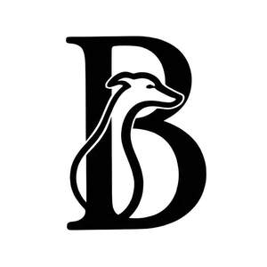

Trade Mark Journal No.2026/005 30 January 2026
UK00004324528 15 January 2026 (14,18,20,28)

- Class 14
- Pet jewelry; Jewelry for pets; Jewellery for pets; Jewelry; Necklaces [jewelry]; Trinkets [jewellery, jewelry (Am.)]; Trinkets [jewelry]; Necklaces [jewellery, jewelry (Am.)]; Bracelets [jewellery, jewelry (Am.)]; Ornaments [jewellery, jewelry (Am.)]; Brooches [jewelry]; Jewelry brooches; Brooches being jewelry; Bracelets [jewelry]; Brooches [jewellery, jewelry (Am.)]; Pendants [jewelry]; Rings [jewellery, jewelry (Am.)]; Jewelry (Paste -) [costume jewelry]; Paste jewelry [costume jewelry]; Amulets [jewellery, jewelry (Am.)]; Medallions [jewellery, jewelry (Am.)]; Pearls [jewellery, jewelry (Am.)]; Lockets [jewellery, jewelry (Am.)]; Jewelry stickpins; Chains [jewellery, jewelry (Am.)]; Pins [jewellery, jewelry (Am.)]; Amulets [jewelry]; Charms [jewellery, jewelry (Am.)]; Necklaces [jewellery]; Rings [jewelry]; Ivory [jewellery, jewelry (Am.)]; Lockets [jewelry]; Jewelry hatpins; Paste jewellery [costume jewelry (Am.)]; Paste jewellery [costume jewelry [Am.]]; Pearls [jewelry]; Trinkets [jewellery]; Costume jewelry; Diamond jewelry; Silver thread [jewellery, jewelry (Am.)]; Gold thread [jewellery, jewelry (Am.)]; Bracelets [jewellery]; Charms for jewelry; Charms [jewelry]; Shoe jewelry; Chains [jewelry]; Ornaments [jewellery]; Ivory jewelry; Jewellery made of crystal; Jewellery made of crystal coated with precious metals; Agate as jewellery; Amber pendants being jewellery; Plastic bracelets in the nature of jewelry; Wire of precious metal [jewellery, jewelry (Am.)]; Cabochons for making jewelry; Beads for making jewelry; Silver thread [jewelry]; Jewelry boxes of metal; Threads of precious metal [jewellery, jewelry (Am.)]; Pendants [jewellery]; Rings [jewellery] made of precious metal; Pearls [jewellery].
- Class 18
- Pet clothing; Raincoats for pet dogs; Pet leads; Collars for pets; Clothing for pets; Pets (Clothing for -); Dog leashes; Pet hair bows; Animal leashes; Clothing for domestic pets; Dog clothing; Dog collars; Cat collars; Dog apparel; Dog shoes; Dog coats; Dog parkas; Dog bellybands; Dog leads; Rawhide chews for dogs; Clothing for dogs; Coats for dogs; Collars for cats; Dog waste bag dispensers adapted for use with leashes; Leashes for animals; Electronic pet collars; Horse collars.
- Class 20
- Pet crates; Pet furniture; Pet houses; Pet cushions; Cushions (Pet -); Pet grooming tables; Inflatable pet beds; Beds for pets; Dog houses [kennels]; Beds for household pets; Dog kennels; Dog beds; Dog baskets; Non-metal dog tags; Dog tags, not of metal; Kennels for household pets; Cat beds; Kennels.
- Class 28
- Pet toys; Toys for pet animals; Toys and playthings for pet animals; Toys for pets; Dog toys; Toys for domestic pets; Toys, games and playthings for pet animals; Toy dogs; Toys for dogs; Snuffle mats being dog toys.
SIU YU LIU